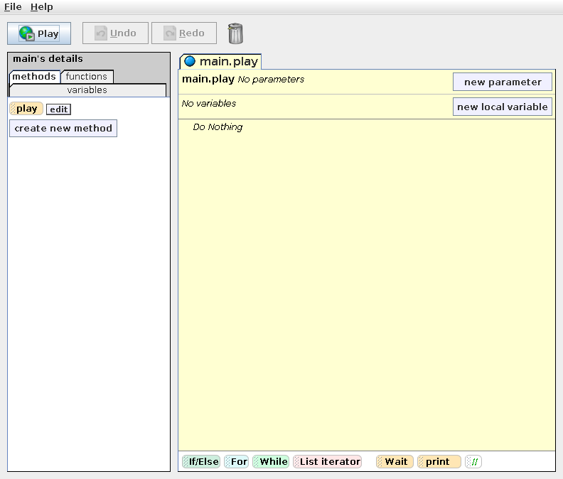
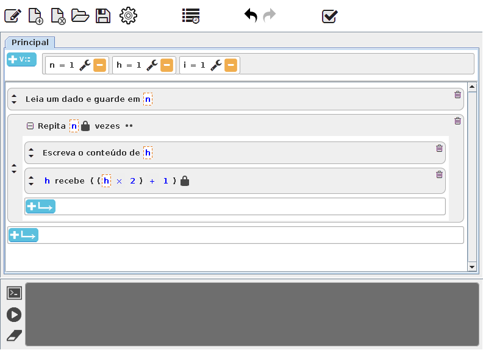
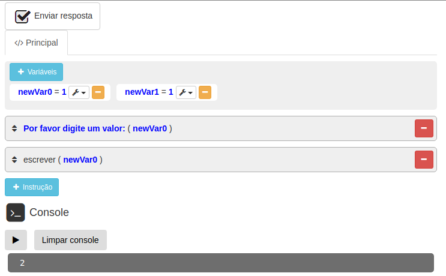

Download

Descarregar o iVProg
- Ambiente para ensino/aprendizagem gratuito e de código livre;
- Inclui avaliador automático;
- Possui recursos para vetores, funções e recursividade;
- Disponibiliza funções pré-definidas (como as matemáticas para seno e cosseno)
- Pode descarregar apenas o iVProg ou ele e todas esse conjunto de páginas;
- Só precisa de um navegador para funcionar!
Versões anteriores do iVProg
Ao longo do tempo, o iVProg passou por melhorias e modificações, mantendo total compatibilidade com os navegadores atuais. Inicialmente foi desenvolvido em Java no formato de applet (Versão I - Java e Versão II - Java), precisou ser reescrito após o bloqueio da execução de applets pelos principais navegadores do mercado, resultando na Versão III - HTML.
A Versão III - HTML continua funcionando nos navegadores e pode ser integrada à sistemas Web. Contudo, para possibilitar novos recursos (como vetores, matrizes e funções), foi desenvolvida uma versão completamente nova (Versão IV - HTML).
Abaixo, você encontra as versões anteriores, que podem ser descarregadas e utilizadas livremente.

Versão I - Java 2009 - 2012
Versão I - Java 2009 - 2012

Versão II - Java 2013 - 2015
Versão II - Java 2013 - 2015

Versão III - HTML 2016 - 2018
Versão III - HTML 2016 - 2018